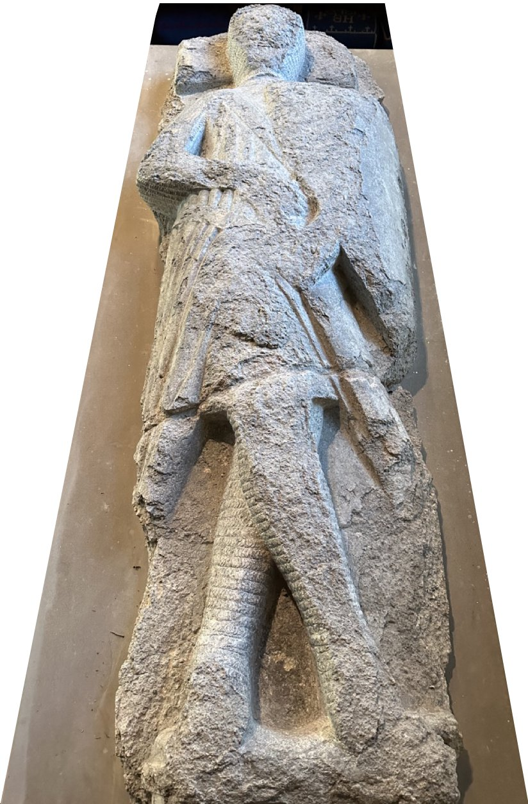
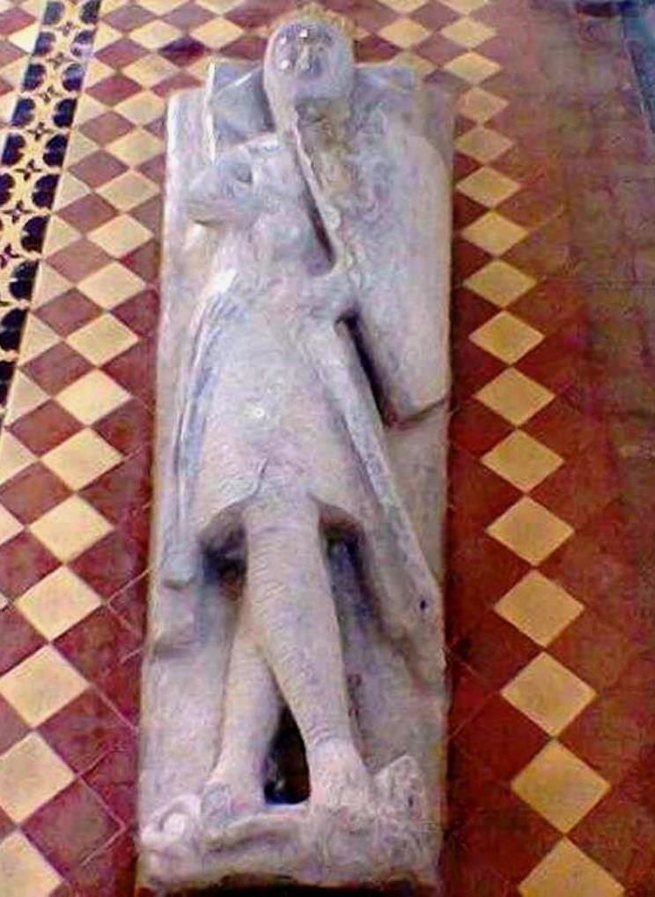
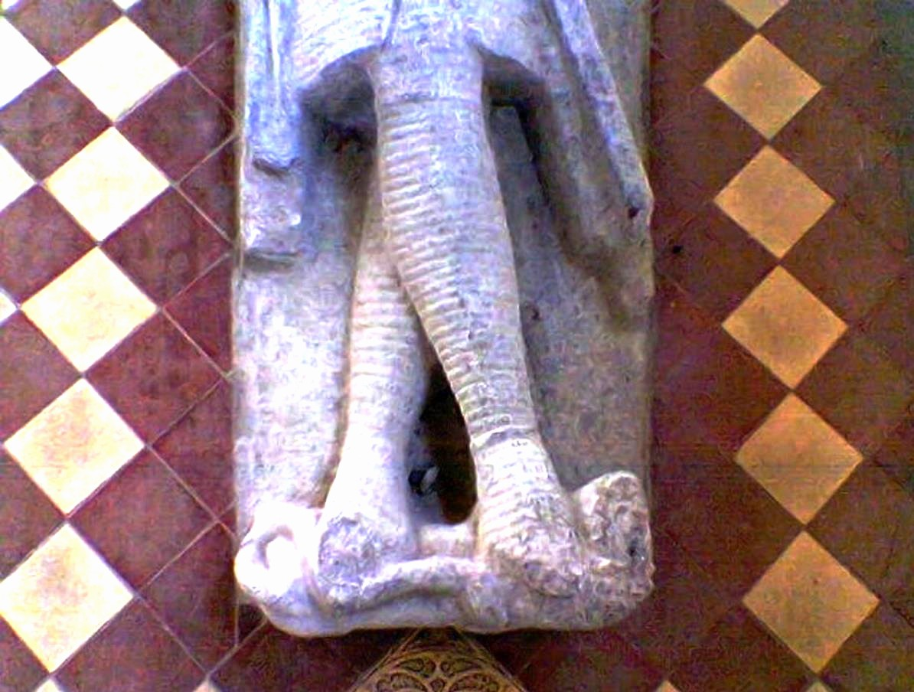
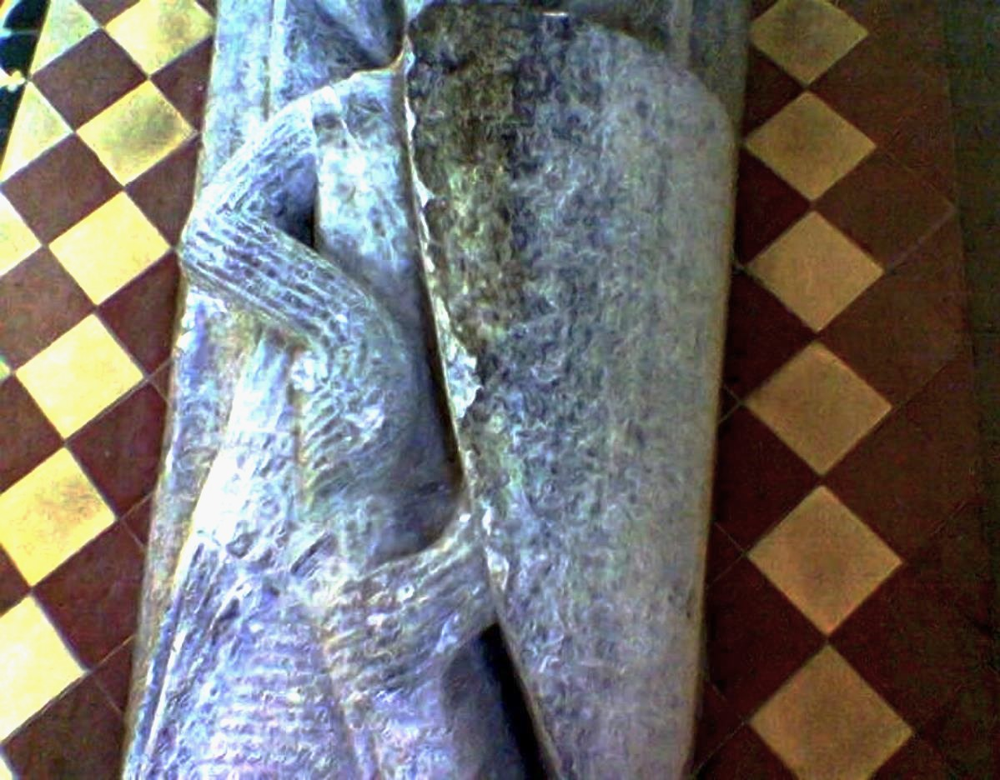

Welton Knight
St. Helen’s Church houses an effigy of an unknown knight. Close inspection of the effigy shows that the knight was someone of importance, and a Knight Templar.
The Welton Knight is the most northerly example of Purbeck Marble Effigies. The effigy was made around 1250 – 1275 and is one of several similar effigies of this design. Purbeck marble is an expensive material and it had to be transported from Dorset. The expense of the marble and of its transportation indicates the importance and wealth of the knight represented by the memorial.
The Templars had a priory at North Ferriby it was founded around 1160 by William de Vescy as a preceptor for the Knights Templar and after their suppression it became a priory of the Austin Cannons which were again suppressed in 1536 and the Priory demolished. The Templars also had a Preceptory at Faxfleet on the banks of the Humber near Gilberdyke and aerial photographs show visible earthworks on the reputed site. This Preceptory was founded around 1220 and suppressed around 1312. So the Welton knight may have been a member of one of these establishments.
Another example of the effigy is to be found in the church of St. Mary Magdalene, Castle Ashby in Northampton. There the Knight is known to be Sir David de Esseby and his effigy has a face mask. The original effigies faces were left blank and later a death mask feature of the person was placed on. The Welton knight has lost his face.
Both effigies reveal that these knights were Crusader Knights. The knight’s legs are crossed right over left and this symbolises that the knights have taken a vow to fight in defence of the Christian Faith but more it also means that they both had been to Jerusalem. The knights have their right hands on their sword hafts which symbolises that they have taken part in the battles of the Crusades. The beasts at their feet are emblematic of the religious soldier conquering the enemies of the church.
So the Welton Knight (seen below, left) is a Knight Templar and also a Crusader Knight of the Thirteenth Century.



